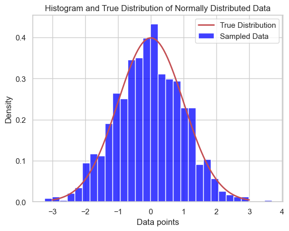
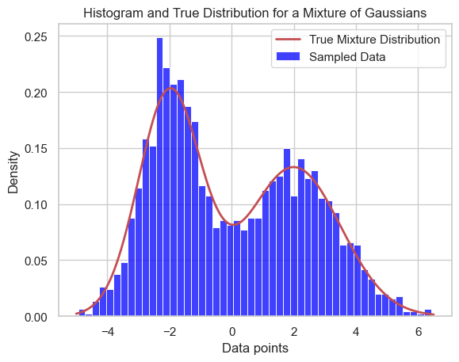

import numpy as np
import seaborn as sns
import matplotlib.pyplot as plt
# Set the style of seaborn plot
sns.set(style='whitegrid')
# Generate dummy data from a normal distribution
mu, sigma = 0, 1 # mean and standard deviation
data = np.random.normal(mu, sigma, 1000)
# Create the histogram of the sampled data
sns.histplot(data, kde=False, color='blue', stat='density', bins=30, label='Sampled Data')
# Plot the true normal distribution curve
x = np.linspace(mu - 3*sigma, mu + 3*sigma, 100)
plt.plot(x, 1/(sigma * np.sqrt(2 * np.pi)) * np.exp(-0.5 * ((x - mu) / sigma) ** 2), linewidth=2, color='r', label='True Distribution')
# Adding labels and title
plt.title('Histogram and True Distribution of Normally Distributed Data')
plt.xlabel('Data points')
plt.ylabel('Density')
# Add a legend to the plot
plt.legend()
# Show the plot
plt.show()

import numpy as np
import seaborn as sns
import matplotlib.pyplot as plt
# Set the style of seaborn plot
sns.set(style='whitegrid')
# Parameters for two Gaussian distributions
mu1, sigma1 = -2, 1 # Mean and standard deviation for the first Gaussian
mu2, sigma2 = 2, 1.5 # Mean and standard deviation for the second Gaussian
n_samples = 1000 # Number of samples
# Generate dummy data from two Gaussian distributions
data1 = np.random.normal(mu1, sigma1, n_samples)
data2 = np.random.normal(mu2, sigma2, n_samples)
# Combine the two distributions into one dataset
data = np.concatenate([data1, data2])
# Create the histogram of the sampled data
sns.histplot(data, kde=False, color='blue', stat='density', bins=50, label='Sampled Data')
# Plot the true distribution curves for each Gaussian component
x = np.linspace(mu1 - 3*sigma1, mu2 + 3*sigma2, 1000)
true_density = (1/(sigma1 * np.sqrt(2 * np.pi)) * np.exp(-0.5 * ((x - mu1) / sigma1) ** 2) +
1/(sigma2 * np.sqrt(2 * np.pi)) * np.exp(-0.5 * ((x - mu2) / sigma2) ** 2)) / 2
plt.plot(x, true_density, linewidth=2, color='r', label='True Mixture Distribution')
# Adding labels and title
plt.title('Histogram and True Distribution for a Mixture of Gaussians')
plt.xlabel('Data points')
plt.ylabel('Density')
# Add a legend to the plot
plt.legend()
# Show the plot
plt.show()

import numpy as np
import seaborn as sns
import matplotlib.pyplot as plt
# Set the style of seaborn plot
sns.set(style='whitegrid')
# Parameters for multiple Gaussian distributions
means = [-4, -1, 0, 2, 5] # Mean of each Gaussian
std_devs = [0.8, 0.5, 1.2, 0.9, 1.0] # Standard deviations of each Gaussian
n_samples = 300 # Number of samples from each Gaussian
# Generate data from each Gaussian distribution
data = np.concatenate([np.random.normal(mean, std, n_samples) for mean, std in zip(means, std_devs)])
# Create the histogram of the sampled data
sns.histplot(data, kde=False, color='blue', stat='density', bins=50, label='Sampled Mixture Data')
# Plot the true distribution curves for each Gaussian component
#x = np.linspace(min(means) - 3 * max(std_devs), max(means) + 3 * max(std_devs), 1000)
#for mean, std in zip(means, std_devs):
# plt.plot(x, norm.pdf(x, mean, std) * (1/len(means)), 'k--', linewidth=1.5) # Scaled by the mixture weight
# Sum of all true distribution curves
total_density = np.sum([norm.pdf(x, mean, std) for mean, std in zip(means, std_devs)], axis=0) / len(means)
plt.plot(x, total_density, 'r', linewidth=2, label='Total Mixture Distribution')
# Adding labels and title
plt.title('Histogram and True Distribution for a Complex Mixture of Gaussians')
plt.xlabel('Data points')
plt.ylabel('Density')
# Add a legend to the plot
plt.legend()
# Show the plot
plt.show()
---------------------------------------------------------------------------
NameError Traceback (most recent call last)
Cell In[4], line 25
17 sns.histplot(data, kde=False, color='blue', stat='density', bins=50, label='Sampled Mixture Data')
19 # Plot the true distribution curves for each Gaussian component
20 #x = np.linspace(min(means) - 3 * max(std_devs), max(means) + 3 * max(std_devs), 1000)
21 #for mean, std in zip(means, std_devs):
22 # plt.plot(x, norm.pdf(x, mean, std) * (1/len(means)), 'k--', linewidth=1.5) # Scaled by the mixture weight
23
24 # Sum of all true distribution curves
---> 25 total_density = np.sum([norm.pdf(x, mean, std) for mean, std in zip(means, std_devs)], axis=0) / len(means)
26 plt.plot(x, total_density, 'r', linewidth=2, label='Total Mixture Distribution')
28 # Adding labels and title
NameError: name 'norm' is not defined